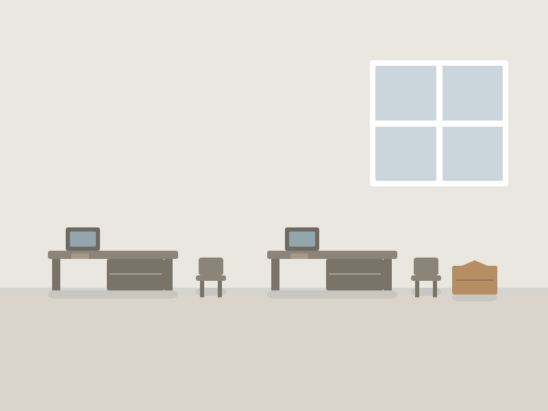

1
Visite technique
Surfaces, volumes, accès, contraintes d'exploitation, sécurité.
Un local professionnel doit être libéré dans un délai précis, souvent avec un enjeu d'exploitation : déménagement, fermeture, changement de bail, fin de sinistre.

Un local professionnel doit être libéré dans un délai précis, souvent avec un enjeu d'exploitation : déménagement, fermeture, changement de bail, fin de sinistre. Nous intervenons sur créneaux convenus, y compris en dehors des heures d'ouverture, avec un interlocuteur unique et une facturation claire.
Surfaces, volumes, accès, contraintes d'exploitation, sécurité.
Découpage par zones ou par soirées si le local reste en activité.
Équipe dédiée, protection des accès, évacuation.
Local vide, procès-verbal d'intervention et facture.
Voir la page Tarifs et les facteurs détaillés ›
Oui, c'est fréquent : intervention par zones successives ou en soirée et le week-end, avec des périmètres balisés.
Oui, devis nominatif détaillé, avec mentions administratives adaptées (bon de commande, référence de dossier, facturation à l'entité).
Oui. Elles sont évacuées vers une filière de recyclage papier dédiée ; lorsque la confidentialité l'exige, une destruction sécurisée est coordonnée avec un prestataire spécialisé.
Décrivez votre situation en quelques étapes et ajoutez des photos. Réponse sous 24 h ouvrées.
Demander un devis gratuit Appeler le 06 12 34 56 78 WhatsAppVider une maison entière, pièce par pièce, sans rien porter.
Vider un appartement en étage, proprement et sans gêne pour les voisins.
Récupérer votre cave, souvent encombrée depuis des années.